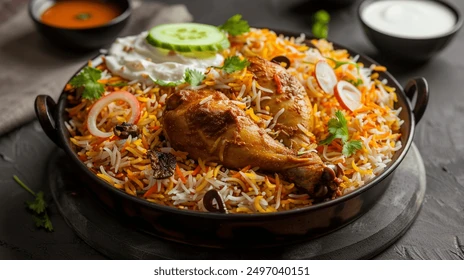

Chicken Biryani
Home

Description
Biryani is an ancient mixed rice dish originating in south asia.
It typically consits of rice, meat (Chicken, Mutton...etc) and spices.
Today we are going to prepare an authentic Chicken Biryani using the
following ingredients and instructions.
Ingredients
- Washed rice
- Garam Masala
- Bay leaves
- Chicken
- Salt
- Onions
- Saffron
- Water
- Yogurt or Curd
- Tomatoes and Potatoes (optional)
- Biryani Masala/Spices
Steps
- Add water and then salt to a pot.
- Bring the water to a boil and then add your washed rice to it with some bay leaves
- In an other pan fry some onions till golden brown
- Marinate your chicken with curd, biryani masala, garam masala and salt.
- Remove the list from the water after it's mostly done cooking
- Cook your marinated chicken with your fried onions until the oil seperates.
- Now carefully layer your rice on top of the chicken without breaking the rice grains.
- Mix safron with a splash of milk and add it to the rice
- Place a lid on top of the pot and cook it on a low flame for 45 minutes.
- After 45 minutes take the lid off and voila! you have a delicious biryani in front of you.